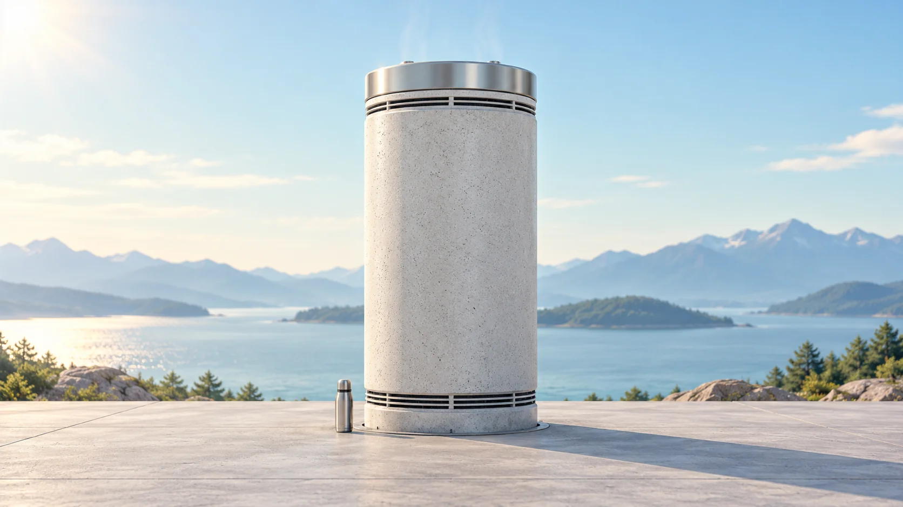
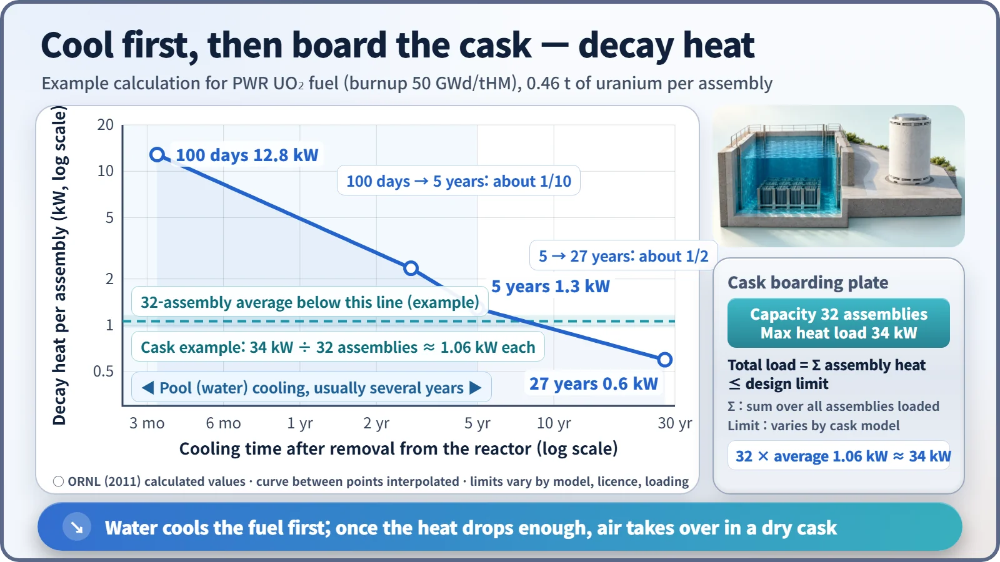
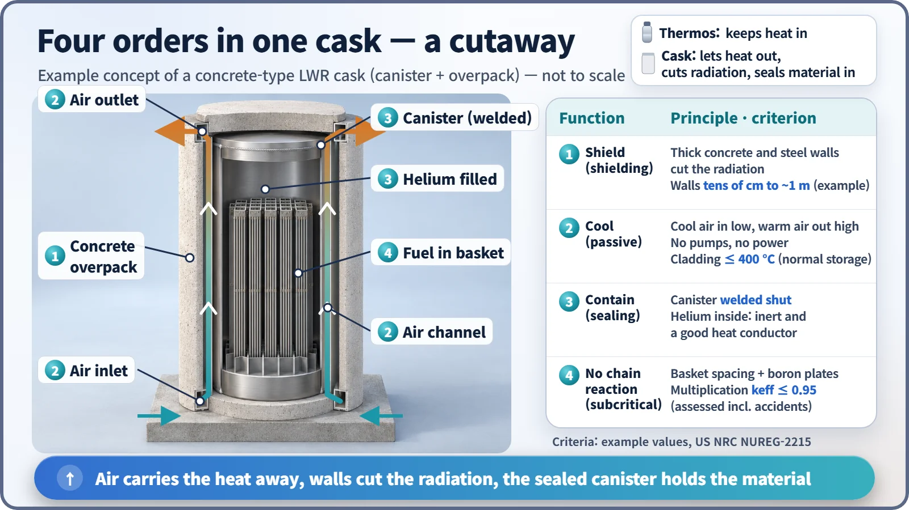

Society, Environment & the Future · 290
What If You Designed a Thermos Backwards? — How a Dry Storage Cask Works
A thermos traps heat; a cask lets heat out while keeping radiation and radioactive material in, with no pumps and no power.

A dry storage cask holds spent fuel that has already cooled for years in a pool, and does four jobs without pumps or power: it shields radiation, removes decay heat by natural air convection, seals the fuel in helium, and keeps it subcritical. A cask can accept only a limited total heat load, so fuel must cool enough before it is loaded. [1]
An odd order form
Imagine ordering a container whose contents keep giving off warmth for decades. You want that heat to escape easily, but you also want thick walls to cut the radiation and a seal so tight that not a speck of radioactive material gets out. And no pumps or electricity.
A thermos uses a vacuum layer to trap heat. This order is the opposite: a container that lets heat out and keeps radiation in. That "backwards thermos" is the dry storage cask, a sealed container that stores spent nuclear fuel, cooling and shielding it with air and thick metal and concrete walls instead of water.
Let the soup cool first
You don't put freshly boiled soup straight into the fridge. Fuel just removed from a reactor keeps producing decay heat as unstable atoms inside it decay, even though the chain reaction has stopped. So it first spends several years in the spent fuel pool.

An Oak Ridge National Laboratory calculation for pressurized water reactor fuel at 50 GWd/tHM shows decay heat per tonne of uranium falling to about 27.9 kW at 100 days, about 2.8 kW at 5 years and about 1.3 kW at around 27 years. From 100 days to 5 years it drops to one-tenth; over the next twenty-odd years it only halves. Short-lived atoms disappear first, leaving cesium-137 and strontium-90, with half-lives of around 30 years, to give off heat slowly. [2]
| Cooling time | Per tonne of uranium | Per assembly (about 0.46 t) |
|---|---|---|
| 100 days | about 27.9 kW | about 12.8 kW |
| 5 years | about 2.8 kW | about 1.3 kW |
| about 27 years | about 1.3 kW | about 0.6 kW |
A 5-year-cooled assembly gives off about 1.3 kW, about as much as an electric space heater. A cask can accept only so much heat, and checking it is simple addition, like an elevator's total weight limit: total cask heat load = sum of every assembly's decay heat ≤ design limit. One concrete-type cask used in the United States holds 32 assemblies with a maximum design heat load of about 34 kW, an average of about 1.06 kW per assembly. So fuel is loaded only after cooling long enough, with hotter and cooler assemblies mixed in the loading pattern. [3]
Packing four lines of the order into one container

Shielding. Gamma rays are stopped well by dense materials such as steel and concrete, and neutrons by hydrogen-rich materials such as concrete or special resins, so cask walls are tens of centimetres to nearly a metre thick.
Passive cooling. Cool air enters vents at the bottom, sweeps up past the inner canister, warms, and leaves through vents at the top, the same natural convection that draws smoke up a chimney. With no pumps or fans, cooling continues even in a power outage. The design goal keeps the fuel cladding at or below 400 °C. [1]
Confinement. The canister is welded shut, or a double lid is bolted down, after the inside is dried and filled with helium. Helium is inert, so it protects the cladding from corrosion, and it conducts heat several times better than air. It stays sealed inside and carries heat to the metal wall, alongside conduction through the basket and radiant heat.
Subcriticality. Assemblies sit at fixed spacing in a "basket" containing neutron-absorbing boron plates. The design keeps the neutron multiplication factor at or below 0.95 even under assumed accident conditions, so no fission takes place inside a cask; the only heat is decay heat. [4]
One steel body vs. a container inside a container
In a metal cask, a single thick steel body handles shielding, confinement and heat transfer. They're heavy, but many are dual-purpose and can also be used for transport. The concrete type is a container inside a container: fuel goes into a thin stainless steel canister that is welded shut, which sits inside a thick concrete overpack. The canister confines, the overpack shields and protects, and the gap between them is the chimney for the air.
Does South Korea already have them?
Yes. At the Wolsong heavy-water reactor site, spent fuel has been stored dry in concrete silos since 1992 and in concrete modules called MACSTOR since 2010. Heavy-water reactor fuel bundles are small and give off little heat, which suits this approach. There are no dry storage facilities yet operating at South Korea's light-water reactor sites; licensing has been reported under way, starting with the Hanbit site. [5]
Three misconceptions to clear up
- A cask is not a final repository. Under IAEA standards, storage means keeping material with the intention of retrieving it; permanent isolation, disposal, is the job of a separate facility.
- No fission happens inside. The only heat is decay heat, and subcriticality is guaranteed by design.
- Dry is not simply better or worse than wet. Water handles freshly removed hot fuel; air handles fuel that has cooled enough.
A thermos seals its walls to keep heat in. A cask lets heat go while its walls cut the radiation and its seal keeps radioactive material locked in, all without a single pump. [6]